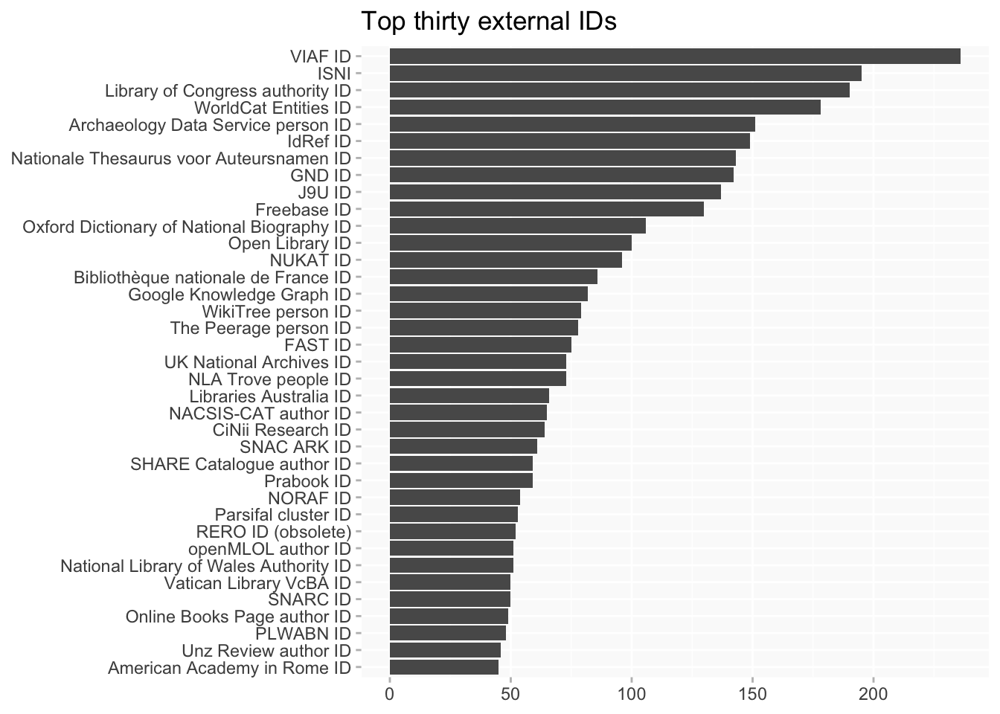

Wikidata links for BN Women
wikidata
Linked data sources (via Wikidata) for women
Wikibase queries
The query fetches all external IDs in BN women’s Wikidata pages, for those who have them. Many of the sources are probably not at all interesting! (I suspect quite a lot simply harvest the same basic data from the same sources.)
- External IDs in Wikidata for BN Women
- slightly adapted version of query for BN and Wikidata IDs
See also: women and their IDs on Wikidata for a complete list of the links summarised here, and Women with ODNBs
Top thirty IDs
(See the table below for full Wikidata descriptions, which are at least sometimes more informative than the abbreviations.)
Comparison of stats for key IDs with BN equivalents
- VIAF
- ISNI
- ADS
| ID | BN | WD |
|---|---|---|
| VIAF ID (bn: P119 / wikidata: P214) | 62 | 235 |
| ISNI (bn: P125 / wikidata: P213) | 595 | 186 |
| Archaeology Data Service person ID (bn: P34 / wikidata: P6734) | 361 | 156 |
Table
Wikidata descriptions added